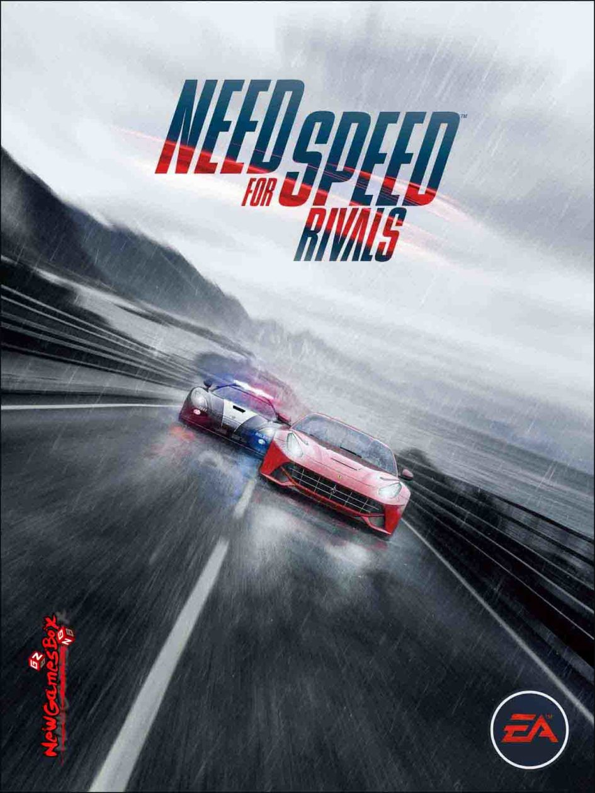

NFS RIVALS
NFS RIVALS PC Game Overview
Here we have a new NFS game by the franchise of EA sports, Need For Speed Rivals. A very interesting and exciting racing game. NFS rivals consists every element that a young gamer demands. Its interface is very good with mind boggling game menu. This game is equally sensational for kids and teens. Even a eight year old kid has no problem in this electrifying game.
The game features astounding graphics as it has a dynamic weather system by which it feels that you are in real world. It has awesome detail by which it seems like you are on the seat and driving through the track. with great many tracks and Cop missions and a huge range of fast sports car that you love to drive NFS rivals is a game worth playing.
In its gameplay it is breath taking as other NFS games are. You have different game modes in which you can play. NFS rivals contains two different careers one as a cop and other as a racer. As a street racer you have the opportunity to race with the other street racers and earn points and money “illegally”.
You will come across the RCPD. and you have to drive away from them as soon as possible otherwise they will bust you and you will lose all you have grossed through racing.
System Requirements of NFS RIVALS
Before You Start NEED FOR SPEED RIVALS Download Free. Make Sure Your PC Meets Minimum System Requirements.
Recommended System Requirements
Operating System: Windows XP, Windows Vista/ Windows 7/ Windows 8 and 8.1
CPU: Intel 2.4 GHz Core 2 Duo
RAM: 4 GB
Hard disk : 15 GB
NFS RIVALS Free Download
Click On The Below Button To Start NFS RIVALS 2012 Free Download. It Is Full And Complete Game. Just Download And Start Playing It.
We Have Provided Direct Link Full Setup Of The Game.